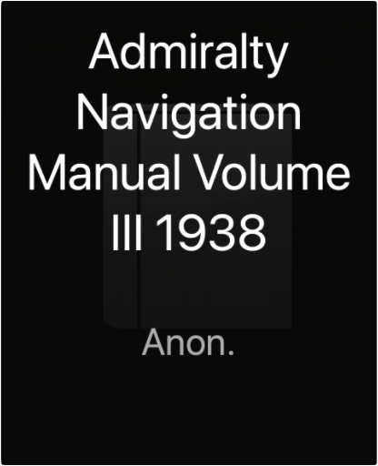
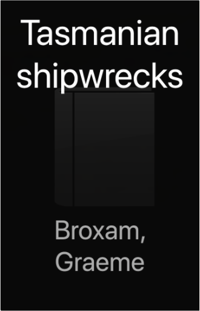

Doddridge Library
Collection Total:
417 Items
Last Updated:
Apr 21, 2020
Shelf:
Books
Movies
Albums
Books - Biographies and Non-Fiction
Books - Ed's nautical books and others
Books - Fiction - Ed and Imo
Books - Fiction - Imo - 1
Books - Fiction - Imo - 2
Books - Miscellaneous
Books in Oxford
Books that didn't make it to Oxford
CDs in box
Coffee table books
1
2
Outdoors and Fishing
Handbook of Knots by Pawson, Des published by DK ADULT Paperback
—N/A—
B008TBI3NS
Manual of Seamanship 1937: Volume One
Lords Comissioners of the Admirality
B008H8960M
Admiralty Manual of Navigation - Volume I - BR 45 (1) 1964
British Admiralty
B008C469DI
Admiralty Manual of Navigation Volume II
Anon
B003D3J5IE

Admiralty Navigation Manual Volume III 1938
Anon.
B0055KGDQU
Electricity and Magnetism 2nd Edition
B.I. And B. Bleaney Bleaney
B008KQ7P1I
Tasmanian shipwrecks
Graeme Broxam
0958656150

Tasmanian shipwrecks
Broxam, Graeme
0958656169
How to Drive a Tank and Other Everyday Tips for the Modern Gentleman
Frank Coles
1408701820
THE BEKEN ALBUM - BEKEN OF COWES
WILLIAM COLLIER
1860466745
Manual of Seamanship. 1932 Volume 2 only
HMSO
B003Y9NUTW
The Young Sea Officer's Sheet Anchor, or a Key to the Leading of Rigging and to Practical Seamanship
Darcy Lever
0921335717
Astronomy for surveyors
Professor R. W. Chapman M.A.
1
2

 Made with Delicious Library
Made with Delicious Library